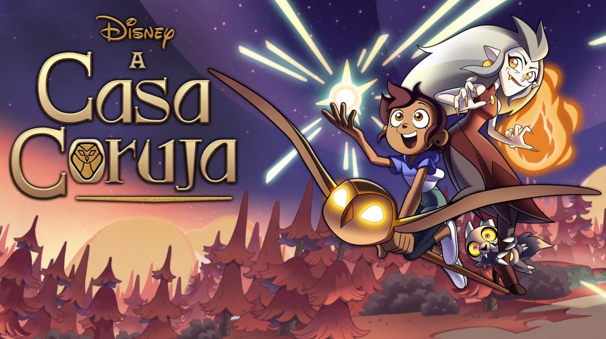

Saga de A Casa Coruja
Temporada 1:
O Aprendizado e a Descoberta da Magia
Luz Noceda é uma garota criativa que não se encaixa no mundo real. Prestes a ser enviada para um acampamento de conformidade, ela segue uma coruja e atravessa um portal para as Ilhas Escaldadas, um arquipélago bizarro formado em cima do cadáver de um Titã gigante.
A Casa Coruja:
Luz passa a morar com Eda Clawthorne (a Mulher Coruja, uma bruxa poderosa e fugitiva da lei) e King (um pequeno demônio com delírios de grandeza). O guardião da casa é Hooty, um demônio-coruja bizarro que se estende pelas paredes.
Descobrindo a Magia
Sendo humana, Luz não tem o órgão mágico das bruxas. Ela descobre que consegue conjurar feitiços desenhando glifos antigos que ativam a magia da própria ilha.
Escola e Vivalidades
Luz consegue se matricular na escola de magia Hexside. Ela faz amizade com os bruxos Willow e Gus, e desenvolve uma rivalidade que depois se transforma em uma forte paixão recíproca por Amity Blight.
O Conflito com o Imperador
A temporada foca na maldição de Eda, que a transforma em um monstro coruja. Descobrimos que sua própria irmã, Lilith, a amaldiçoou no passado para entrar no Coven do Imperador. No final, Eda é capturada pelo tirânico Imperador Belos. Para salvá-la, Luz enfrenta Belos e é forçada a destruir seu único portal para a Terra, ficando presa nas Ilhas Escaldadas. Lilith se arrepende, divide a maldição com Eda, e ambas perdem boa parte de seus poderes mágicos.
Temporada 2:
Segredos do Passado e o Dia da União
Com Eda sem magia pura e Luz sem o portal, a dinâmica muda. O tom da série fica mais maduro e focado na rebelião contra o governo autoritário.
O Passado de King e Philip:
King descobre que não é um demônio comum, mas sim o último Titã vivo (filho do Titã que forma as ilhas). Luz investiga antigos humanos que visitaram a ilha e descobre os diários de Philip Wittebane, um homem do século XVII.
A Verdade sobre Belos:
Luz descobre a pior reviravolta: Imperador Belos é, na verdade, Philip Wittebane. Ele odeia bruxas e passou séculos sobrevivendo à base de magia sombria e criando clones de seu irmão falecido (chamados Grimwalkers), sendo o mais recente o jovem Hunter (o Guarda Dourado).
O Plano de Extermínio:
Belos inventou o sistema de Covens para marcar os cidadãos com selos mágicos. Seu objetivo final é o Dia da União, onde ele usará um feitiço de drenagem para matar todas as bruxas da ilha e retornar à Terra como um herói.
O Caos do Coletor:
Para realizar o feitiço, Belos fez um pacto com O Coletor, uma entidade infantil cósmica com poderes divinos. No clímax do Dia da União, os amigos tentam parar o feitiço. King faz um trato com o Coletor para libertá-lo em troca de parar a destruição. O Coletor destrói o corpo físico de Belos com um dedo e começa a remodelar a realidade. Luz, Amity, Willow, Gus e Hunter são empurrados pelo portal restaurado e acabam escapando para o mundo humano, deixando King e Eda para trás.
Temporada 3
(Especiais): O Confronto Final
Esta temporada foi encurtada pela Disney e transformada em três episódios especiais de longa duração.
1. Thanks to Them:
O grupo passa meses escondido na Terra, morando com a mãe de Luz, Camila. Eles tentam achar uma forma de voltar enquanto lidam com traumas. Porém, um resto da gosma de Belos sobreviveu, possuiu Hunter temporariamente e conseguiu abrir um novo portal. O grupo de adolescentes e Camila cruzam o portal de volta para salvar as ilhas.
2. For the Future:
Ao retornar, eles encontram as Ilhas Escaldadas transformadas em um playground infantil gigante sob o comando do Coletor, que transformou quase todos os habitantes em fantoches. King tenta mantê-lo calmo usando brincadeiras. Belos reconstrói seu corpo e manipula o Coletor por trás dos panos.
3. Watching and Dreaming:
Belos infecta o próprio coração do Titã morto para assumir o controle de toda a ilha (virando um monstro gigante). Luz se sacrifica para salvar o Coletor (que não entendia o conceito de morte) e morre. No plano espiritual (In-Between), ela encontra o espírito do Titã original. Ele concede a Luz seus últimos poderes mágicos, permitindo que ela mude para uma forma de Titã temporária. Luz ressucita, une forças com Eda e King, e juntos eles arrancam a essência de Belos do Titã, derrotando-o definitivamente.
Epílogo: O Coletor decide voltar para as estrelas e aprender a crescer. Anos depois, as Ilhas Escaldadas foram reconstruídas sem tirania, e Luz agora divide sua vida faculdade na Terra com visitas frequentes à sua nova família mágica.